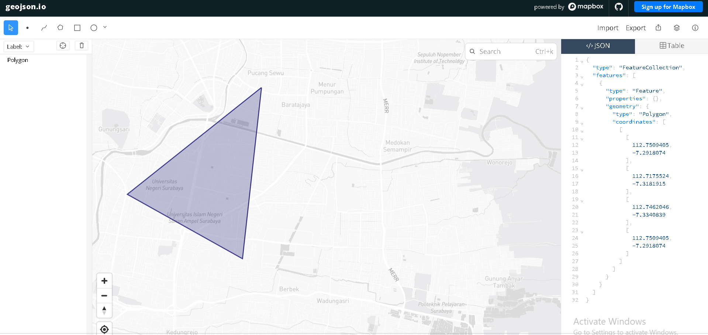

Data Understanding#
Langkah pertama dalam proyek ini adalah mengumpulkan data polutan udara seperti \(NO_2\), \(CO\), dan \(SO_2\) yang berjenis deret waktu (Time Series). Data tersebut diambil dari platform satelit Copernicus Data Space Ecosystem.
Buat akun terlebih dahulu di website Copernicus sebelum melakukan crawling data menggunakan library openEO.
Install Library#
Sebelum melakukan proses crawling data, kita membutuhkan modul Python pendukung seperti openeo untuk berkomunikasi dengan API Copernicus dan pandas untuk membaca format data tabular csv/dataframe.
pip install openeo
pip install pandas
Autentikasi dan Pengambilan Data#
Skrip di bawah ini melakukan proses autentikasi dan menghubungkan akun lokal kita dengan server Copernicus menggunakan metode OIDC:
import openeo
connection = openeo.connect("[https://openeo.dataspace.copernicus.eu](https://openeo.dataspace.copernicus.eu)").authenticate_oidc()
Saat menjalankan kode di atas akan muncul pesan autentikasi:
Note: Authenticated using refresh token.
Authenticated successfully.
Klik tautan tersebut lalu login menggunakan akun Copernicus.
Definisi Area dan Pengambilan Data \(NO_2\), \(CO\), dan \(SO_2\) dari GeoJSON#
Setelah berhasil, langkah selanjutnya adalah menentukan wilayah spesifik. Titik koordinat wilayah (batasan polygon) didapatkan menggunakan alat bantu pemetaan geojson.io dengan menggambar lokasi area studi yang diinginkan lalu meng-copy koordinatnya.

Koordinat yang didapatkan dimasukkan ke dalam variabel spatial_extent dan eretan rentang data yang diinginkan. Lalu memuat koleksi polutan berdasarkan bounding box wilayah tersebut dengan menyesuaikan variabel temporal_extent dan bands.
Karena satelit merekam per-area yang sama beberapa kali, dilakukan agregasi temporal harian agar hanya mendapat rata-rata data per hari. Dilanjutkan dengan agregasi spasial guna menghitung rata-rata nilai polutan seluruh grid pada wilayah koordinat tersebut menjadi satu nilai tunggal:
# Koordinat area observasi dari GeoJSON
aoi = {
"type": "FeatureCollection",
"features": [
{
"type": "Feature",
"geometry": {
"type": "Polygon",
"coordinates": [
[
[112.7500405, -7.2918074],
[112.7175524, -7.3181015],
[112.7462846, -7.3340839],
[112.7500405, -7.2918074]
]
]
}
}
]
}
# Load Data Cube openEO untuk Sentinel-5P NO2
datacube = connection.load_collection(
"SENTINEL_5P_L2",
temporal_extent=["2025-09-01", "2026-08-31"],
spatial_extent={"west": 112.71, "south": -7.33, "east": 112.75, "north": -7.29},
bands=["NO2"]
)
# Agregasi temporal harian
datacube = datacube.aggregate_temporal_period(reducer="mean", period="day")
# Agregasi spasial rata-rata area polygon
datacube = datacube.aggregate_spatial(reducer="mean", geometries=aoi)
Eksekusi Job dan Download#
Proses agregasi data ini membutuhkan waktu sehingga dikirim sebagai batch job:
job = datacube.execute_batch(title="NO2 Data Extraction", outputfile="no2_raw.nc")
Tunggu proses eksekusi dari server, progress eksekusi bisa dipantau pada output Editor. Setelah diproses oleh server, unduhan data akhir akan berupa file NetCDF (no2_raw.nc).